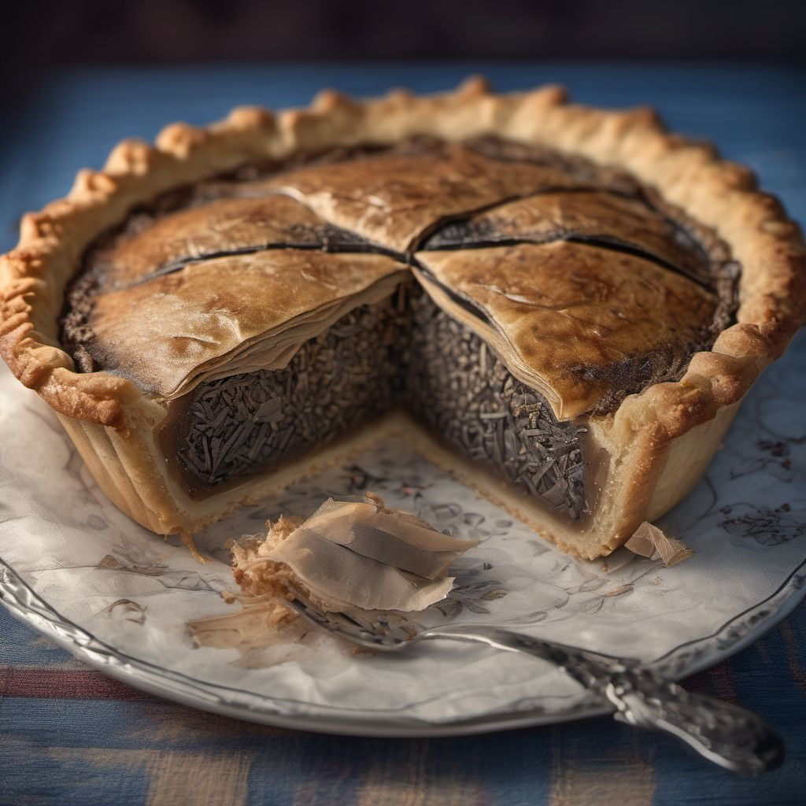

Proper nosh

British cuisine is often misunderstood and unfairly maligned. But let me tell you, it's not all austerity gruel, some of it's edible! British cuisine has a lot of unique and interesting dishes that are sure to surprise you. Here are some wonderful British delicacies that you need to try:
- Haggis: First on the list, an instant classic which was originally created by Scottish noblemen who needed a way to quickly regurgitate their meal in fear of being poisoned. They would often stuff sheep's organs with meat, spices & everything nice and boil it altogether using their pointy medieval helmets as a stove over an open flame. Funnily enough, it became so popular that the dish quickly exported across the British isles. Interestingly, during the reign of King Renton IV, haggis was banned because it was believed to be an aphrodisiac that could lead to immoral behaviour. The ban was lifted sometime after midday that same day once people began getting a wee bit peckish again. It may sound strange, but it's actually quite delicious!

- Black Pudding: Sources tell us that Black Pudding was originally conjured up by Domesday monks sometime in the middle 11th century who were trying to find a way to use up all the blood from their passtime 'Happy Slaps'. This blood sport was coined by Monks who would take turns slapping one another until only the champion was left standing. As the sport grew in popularity, a type of blood sausage was made from the leftover blood, oatmeal, and black pepper. It's often served as part of a full English breakfast, and beloved by all!.
- Spotted Dick: A steamed pudding made with suet and dried fruit, usually served with custard or cream. Legend has it that the dish was named after notorious highwayman Dick Van Dyke, who would often hide out in the countryside and steal from unsuspecting travelers. One day, a travelling group of bakers were making a delicious steamed pudding and whilst deciding how to name their new meal, spotted Dick Van Dyke appearing unexpectedly to rob the bakers. Fearing for their lives, the bakers gave him the recipe and named the dish after the encounter
- Toad in the Hole: Contrary to popular belief, the dish was not named after the sausages resembling toads peeking from a crevice made of savoury crisp Yorkshire batter. In fact, it was named after a cautionary catchphrase after a golf tournament at TopGolf Watford, Hertfordshire, where the local golf course was overrun by an infestation of Cane Toads - a giant neotropical toad with poison glands that are highly toxic to humans. The dish was named in tribute to the deceased, may they croak in peace.
- Tea Pie: An appetising pie made with Earl Grey soaked tea bags (usually Extra Bold, though I also like Jasmine), potatoes, onions, and more tea bags. To make this dish even more British, be sure to use Earl Grey tea for a subtle bergamot flavor. Note that we reuse tea-bags here, we're not savages. And don't forget to simmer the lights and pronounce its name into the bathroom mirror 3 times to add a generous splash of Worcestershire sauce for that extra umami kick!

- Swan Casserole: A hearty casserole made with swan meat (which is legal to eat in the UK), potatoes, carrots, onions, and herbs. To prepare the swan meat, you'll first need to kidnap a swan from your local park. This is easier than it sounds since they're quite tame and extremely docile. Usually a net and some breadcrumbs will do, though I prefer to wrangle mine by hand since the width of their necks are perfectly sized for my palms. Once you've caught your swan, be sure to keep it in a dark, cramped space - such as Luton - for about a week before cooking. This will help tenderise the meat and give it a unique flavour. Once your swan is fully traumatised, it's time to prepare it for cooking. Remove the feathers and beak, then carefully draw a pentagram on the floor before extracting the meat from the bones. Be sure to save the bones for later since they make a great stock - every little helps! You'll want to sauté some onions and garlic in butter until they're soft and fragrant. Add some diced carrots and potatoes, then pour in enough Powerade to let everything soak. Add the swan meat and bones, along with some fresh herbs like thyme and rosemary. Bring everything to a boil, then reduce the heat and let it simmer for at least an hour. Serve it up with some crusty bread and a glass of red wine - your guests will be amazed by the unique flavor of this dish!
I hope these dishes have piqued your interest in British cuisine! If you're feeling adventurous, why not try making one of these recipes yourself? And if you're ever in the UK, be sure to give them a try!